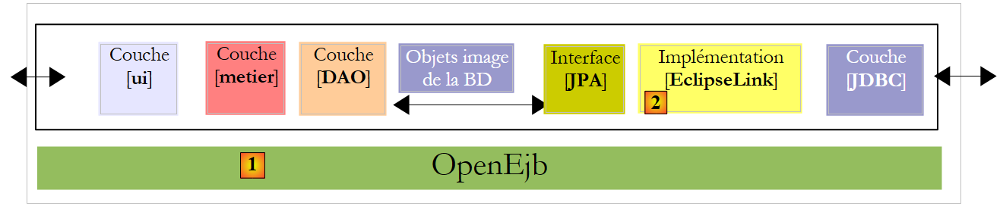
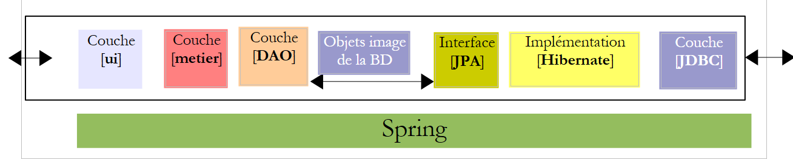
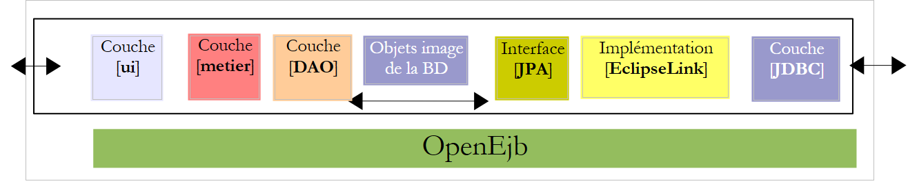
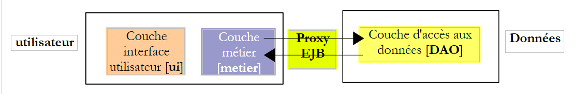
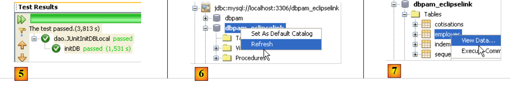
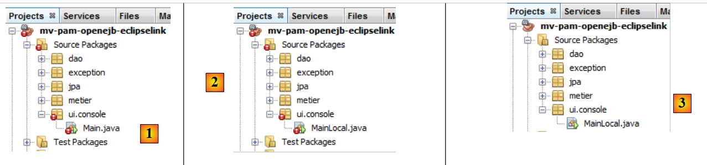

6. Versión 2: Arquitectura OpenEJB / JPA
6.1. Introducción a los principios de portabilidad
A continuación, presentamos los principios que regirán la migración de una aplicación JPA / Spring / Hibernate a una aplicación JPA / OpenEJB / EclipseLink. Esperaremos hasta la sección 6.2 para crear los proyectos Maven.
6.1.1. Las dos arquitecturas
La implementación actual con Spring / Hibernate
 |
La implementación que se va a desarrollar con OpenEJB / EclipseLink
 |
6.1.2. Bibliotecas del proyecto
- Las capas [DAO] y [business] ya no son instanciadas por Spring. Son instanciadas por el contenedor OpenEJB.
- Las bibliotecas del contenedor Spring y su configuración se sustituyen por las bibliotecas del contenedor OpenEJB y su configuración.
- Las bibliotecas de la capa JPA / Hibernate se sustituyen por las de la capa JPA / EclipseLink
6.1.3. Configuración de la capa JPA / EclipseLink / OpenEJB
- El archivo [META-INF/persistence.xml] que configura la capa JPA queda de la siguiente manera:
- Línea 3: Las transacciones en un contenedor EJB son del tipo JTA (Java Transaction API). Con Spring eran del tipo RESOURCE_LOCAL.
- Línea 9: La implementación de JPA utilizada es EclipseLink
- Líneas 5–7: Entidades gestionadas por la capa JPA
- Líneas 11-13: Propiedades del proveedor EclipseLink
- Línea 12: Se crearán tablas en cada ejecución
Las características JDBC de la fuente de datos JTA utilizada por el contenedor OpenEJB se especificarán en el siguiente archivo de configuración [conf/openejb.conf]:
- Línea 3: Utilizamos el ID «Default JDBC Database» cuando trabajamos con un contenedor OpenEJB integrado en la propia aplicación.
- Línea 5: utilizamos una base de datos MySQL [dbpam_eclipselink]
6.1.4. Implementación de la capa [DAO] utilizando EJB
- Las clases que implementan la capa [DAO] se convierten en EJB. Tomemos como ejemplo la clase [CotisationDao]:
La interfaz [ICotisationDao] en la versión de Spring era la siguiente:
El EJB implementará esta misma interfaz de dos formas diferentes: una local y otra remota. La interfaz local puede ser utilizada por un cliente que se ejecute en la misma JVM, mientras que la interfaz remota puede ser utilizada por un cliente que se ejecute en una JVM diferente.
La interfaz local:
- Línea 6: La interfaz [ICotisationDaoLocal] hereda de la interfaz [ICotisationDao] para adoptar todos sus métodos. No añade ninguno nuevo.
- Línea 5: la anotación @Local la convierte en una interfaz local para el EJB que la implementará.
La interfaz remota:
- Línea 6: La interfaz [ICotisationDaoRemote] hereda de la interfaz [ICotisationDao] para adoptar todos sus métodos. No añade ninguno nuevo.
- Línea 5: La anotación @Remote la convierte en una interfaz remota para el EJB que la implementará.
La capa [DAO] es implementada por un EJB que implementa ambas interfaces (esto no es obligatorio):
- línea 1: la anotación @Stateless, que convierte a la clase en un EJB
- línea 2: la anotación @TransactionAttribute, que garantiza que todos los métodos de la clase se ejecutarán dentro de una transacción.
- línea 5: la anotación @PersistenceContext, que inyecta el EntityManager de la capa JPA en la clase [CotisationDao]. Es idéntica a la que teníamos en la versión de Spring.
Cuando se utiliza la interfaz local de la capa [DAO], el cliente de esta interfaz se ejecuta en la misma JVM.
 |
En el ejemplo anterior, las capas [business] y [DAO] intercambian objetos por referencia. Cuando una capa modifica el objeto compartido, la otra capa detecta este cambio.
Cuando se utiliza la interfaz remota de la capa [DAO], el cliente de esta interfaz suele ejecutarse en otra JVM.
 |
En el diagrama anterior, las capas [business] y [DAO] intercambian objetos por valor (serialización del objeto intercambiado). Cuando una capa modifica un objeto compartido, la otra capa solo percibe este cambio si se le devuelve el objeto modificado.
6.1.5. Implementación de la capa [business] utilizando un EJB
- La clase que implementa la capa [business] se convierte también en un EJB que implementa una interfaz local y una remota. La interfaz [IMetier] inicial era la siguiente:
Creamos una interfaz local y una interfaz remota basadas en la interfaz anterior:
El EJB de la capa [de negocio] implementa estas dos interfaces:
- Líneas 1-2: definen un EJB en el que cada método se ejecuta dentro de una transacción.
- Línea 7: una referencia a la interfaz local del EJB [CotisationDao].
- Línea 6: la anotación @EJB indica al contenedor EJB que inyecte una referencia a la interfaz local del EJB [CotisationDao].
- Líneas 8-11: Hacemos lo mismo con las interfaces locales de los EJB [EmployeeDao] y [CompensationDao].
En última instancia, cuando se instancie el EJB [Metier], los campos de las líneas 7, 9 y 11 se inicializarán con referencias a las interfaces locales de los tres EJB de la capa [DAO]. Por lo tanto, estamos asumiendo aquí que las capas [business] y [DAO] se ejecutarán en la misma JVM.
 |
6.1.6. Clientes EJB
 |
En el diagrama anterior, para comunicarse con la capa [business], la capa [ui] debe obtener una referencia a la interfaz remota del EJB en la capa [business].
 |
En el diagrama anterior, para comunicarse con la capa [business], la capa [UI] debe obtener una referencia a la interfaz local del EJB de la capa [business]. El método para obtener estas referencias varía de un contenedor a otro. En el caso del contenedor OpenEJB, puede proceder de la siguiente manera:
Referencia a la interfaz local:
- Líneas 2–5: Se inicializa el contenedor OpenEJB.
- Línea 5: Disponemos de un contexto JNDI (Java Naming and Directory Interface) que nos permite obtener referencias a los EJB. Cada EJB se identifica mediante un nombre JNDI:
- (continuación)
- para la interfaz local, añada «Local» al nombre del EJB (líneas 7-9)
- Para la interfaz remota, añadimos «Remote» al nombre del EJB
Con Java EE 5, estas reglas varían en función del contenedor de EJB. Esto supone un reto. Java EE 6 introdujo una notación JNDI que es portátil en todos los servidores de aplicaciones.
El código anterior recupera referencias a las interfaces locales de los EJB a través de sus nombres JNDI. Como ya hemos mencionado anteriormente, estas referencias también se pueden obtener mediante la anotación @EJB. Por lo tanto, podríamos escribir:
La anotación @EJB solo se tiene en cuenta si pertenece a una clase cargada por el contenedor EJB. Este será el caso de la clase [Metier], por ejemplo. Sin embargo, el código anterior pertenece a una clase de consola que no será cargada por el contenedor EJB. Por lo tanto, nos vemos obligados a utilizar los nombres JNDI de los EJB.
A continuación se muestra el código para obtener una referencia a la interfaz remota del EJB [Metier]:
6.2. Ejercicio práctico
Proponemos migrar la aplicación NetBeans Spring/Hibernate a una arquitectura OpenEJB/EclipseLink.
La implementación actual con Spring/Hibernate
 |
La implementación que se va a desarrollar con OpenEJB / EclipseLink
 |
6.2.1. Configuración de la base de datos [ dbpam_eclipselink]
Si no existe, cree la base de datos MySQL [dbpam_eclipselink]. Si existe, elimine todas sus tablas. Cree una conexión de NetBeans a esta base de datos tal y como se describe en la sección 6.2.1.
6.2.2. Configuración inicial del proyecto de NetBeans
- Cargue el proyecto Maven [mv-pam-spring-hibernate]
- Cree un nuevo proyecto Java de Maven [mv-pam-openejb-eclipselink] [1]
 |
- En la pestaña [Archivos] [2], crea una carpeta [conf] [3] en la raíz del proyecto
- Coloque el siguiente archivo [openejb.conf] [4] en esta carpeta:
 |
- Crea la carpeta [src/main/resources/META-INF] [5]
- Coloca en ella el siguiente archivo [persistence.xml] [6]:
<?xml version="1.0" encoding="UTF-8"?>
<persistence version="1.0" xmlns="http://java.sun.com/xml/ns/persistence" xmlns:xsi="http://www.w3.org/2001/XMLSchema-instance" xsi:schemaLocation="http://java.sun.com/xml/ns/persistence http://java.sun.com/xml/ns/persistence/persistence_1_0.xsd">
<persistence-unit name="dbpam_eclipselinkPU" transaction-type="JTA">
<!-- the supplier JPA is EclipseLink -->
<provider>org.eclipse.persistence.jpa.PersistenceProvider</provider>
<!-- jpa entities -->
<class>jpa.Cotisation</class>
<class>jpa.Employe</class>
<class>jpa.Indemnite</class>
<!-- properties provider EclipseLink -->
<properties>
<property name="eclipselink.logging.level" value="FINE"/>
<property name="eclipselink.ddl-generation" value="drop-and-create-tables"/>
</properties>
</persistence-unit>
</persistence>
- Línea 12: Solicitamos registros detallados a EclipseLink,
- línea 13: se crearán tablas cuando se instancie la capa JPA,
- Añade las bibliotecas OpenEJB y EclipseLink, así como el controlador JDBC de MySQL, al archivo [pom.xml] del proyecto:
<project xmlns="http://maven.apache.org/POM/4.0.0" xmlns:xsi="http://www.w3.org/2001/XMLSchema-instance"
xsi:schemaLocation="http://maven.apache.org/POM/4.0.0 http://maven.apache.org/xsd/maven-4.0.0.xsd">
<modelVersion>4.0.0</modelVersion>
<groupId>istia.st</groupId>
<artifactId>mv-pam-openejb-eclipselink</artifactId>
<version>1.0-SNAPSHOT</version>
<packaging>jar</packaging>
<name>mv-pam-openejb-eclipselink</name>
<url>http://maven.apache.org</url>
<properties>
<project.build.sourceEncoding>UTF-8</project.build.sourceEncoding>
</properties>
<dependencies>
<dependency>
<groupId>org.apache.openejb</groupId>
<artifactId>openejb-core</artifactId>
<version>4.0.0</version>
</dependency>
<dependency>
<groupId>junit</groupId>
<artifactId>junit</artifactId>
<version>4.10</version>
<scope>test</scope>
<type>jar</type>
</dependency>
<dependency>
<groupId>org.eclipse.persistence</groupId>
<artifactId>eclipselink</artifactId>
<version>2.3.0</version>
</dependency>
<dependency>
<groupId>org.eclipse.persistence</groupId>
<artifactId>javax.persistence</artifactId>
<version>2.0.3</version>
</dependency>
<dependency>
<groupId>mysql</groupId>
<artifactId>mysql-connector-java</artifactId>
<version>5.1.6</version>
</dependency>
<dependency>
<groupId>org.swinglabs</groupId>
<artifactId>swing-layout</artifactId>
<version>1.0.3</version>
</dependency>
</dependencies>
<repositories>
<repository>
<url>http://download.eclipse.org/rt/eclipselink/maven.repo/</url>
<id>eclipselink</id>
<layout>default</layout>
<name>Repository for library Library[eclipselink]</name>
</repository>
</repositories>
</project>
- líneas 18–22: la dependencia de OpenEJB,
- líneas 30–39: las dependencias de EclipseLink,
- líneas 41-44: la dependencia del controlador JDBC de MySQL
6.2.3. Portar la capa [DAO]
Portaremos la capa [DAO] copiando paquetes del proyecto [mv-pam-spring-hibernate] al proyecto [mv-pam-openejb-eclipselink].
- Copia los paquetes [dao, exception, jpa]
 |
Los errores indicados anteriormente se deben a que la capa [DAO] copiada utiliza Spring y las bibliotecas de Spring ya no forman parte del proyecto.
6.2.3.1. El EJB [CotisationDao]
Creamos las interfaces locales y remotas para el futuro EJB [CotisationDao]:
La interfaz local ICotisationDaoLocal:
Para garantizar que las importaciones de paquetes sean correctas, haz clic con el botón derecho del ratón en el código y selecciona [Corregir importaciones].
La interfaz remota ICotisationDaoRemote:
A continuación, modificamos la clase [CotisationDao] para convertirla en un EJB:
La importación que esta clase realizaba del marco Spring desaparece. Realiza un [Limpiar y compilar] en el proyecto:
 |
En [1], ya no hay ningún error en la clase [CotisationDao].
6.2.3.2. Los EJB [EmployeDao] e [IndemniteDao]
Repetimos el mismo proceso para los demás elementos de la capa [DAO]:
- las interfaces IEmployeDaoLocal e IEmployeDaoRemote derivadas de IEmployeDao
- EJB `EmployeDao` que implementa estas dos interfaces
- las interfaces IIndemniteDaoLocal e IIndemniteDaoRemote derivadas de IIndemniteDao
- EJB IndemniteDao que implementa estas dos interfaces
Una vez hecho esto, ya no hay más errores en el proyecto [2].
6.2.3.3. La clase [PamException]
La clase [PamException] sigue siendo la misma que antes, con un pequeño cambio:
Se ha añadido la línea 5. Para obtener las importaciones correctas, haz clic en [Corregir importaciones].
Para entender la anotación de la línea 5, recuerda que todos los métodos de los EJB de nuestra capa [DAO]:
- se ejecuta dentro de una transacción iniciada y finalizada por el contenedor EJB
- lanza una [PamException] tan pronto como algo sale mal
 |
Cuando la capa [business] llama a un método M de la capa [DAO], esta llamada es interceptada por el contenedor EJB. Es como si hubiera una clase intermedia entre la capa [business] y la capa [DAO] —aquí denominada [EJB Proxy]— que intercepta todas las llamadas a la capa [DAO]. Cuando se intercepta la llamada al método M de la capa [DAO], el proxy EJB inicia una transacción y, a continuación, cede el control al método M de la capa [DAO], que se ejecuta dentro de esa transacción. El método M puede completarse con o sin una excepción.
- Si el método M finaliza sin una excepción, el control vuelve al proxy EJB, que termina la transacción confirmándola. A continuación, el control se devuelve al método de llamada en la capa [de negocio]
- Si el método M finaliza con una excepción, la ejecución vuelve al proxy EJB, que termina la transacción mediante un rollback. Además, envuelve esta excepción en una EJBException. A continuación, la ejecución vuelve al método de llamada en la capa [business], que, por lo tanto, recibe una EJBException. La anotación de la línea 5 anterior impide esta encapsulación. Por lo tanto, la capa [business] recibirá una PamException. Además, el atributo rollback=true indica al proxy EJB que, cuando reciba una PamException, debe revertir la transacción.
6.2.3.4. Prueba de la capa [DAO]
Nuestra capa [DAO] implementada por EJB se puede probar. Comenzamos copiando el paquete [dao] de [Test Packages] en el proyecto [mv-pam-springhibernate] al proyecto que se está desarrollando actualmente [1]:
 |
Nos quedamos únicamente con la prueba [JUnitInitDB], que inicializa la base de datos con algunos datos [2]. Cambiamos el nombre de la clase [JUnitInitDbLocal] [3]. La clase [JUnitInitDBLocal] utilizará la interfaz local de los EJB de la capa [DAO].
En primer lugar, modificamos la clase [JUnitInitDBLocal] de la siguiente manera:
- líneas 3-5: referencias a las interfaces locales de los EJB en la capa [DAO]
- línea 7: @BeforeClass anota el método que se ejecuta cuando comienza la prueba JUnit
- líneas 10-13: inicialización del contenedor OpenEJB. Esta inicialización es propia y varía según cada contenedor EJB.
- línea 13: disponemos de un contexto JNDI (Java Naming and Directory Interface) que permite acceder a los EJB a través de nombres. Con OpenEJB, la interfaz local de un EJB se designa como ELocal y la interfaz remota como ERemote.
- Líneas 15-17: solicitamos una referencia a las interfaces locales de los EJB [EmployeDao, CotisationDao, IndemniteDao] desde el contexto JNDI.
 |
Compile el proyecto, inicie el servidor MySQL si es necesario y ejecute la prueba JUnitInitDBLocal. Tenga en cuenta que el archivo [persistence.xml] se ha configurado para recrear las tablas en cada ejecución. Antes de ejecutar la prueba, es recomendable eliminar cualquier tabla de la base de datos MySQL [dbpam_eclipselink].
 |
- En [1], en la pestaña [Servicios], elimine las tablas de la conexión de NetBeans establecida en la sección 6.2.1.
- En [2], la base de datos [dbpam_eclipselink] ya no contiene ninguna tabla
- En [3], se compila el proyecto
- En [4], se ejecuta la prueba JUnitInitDBLocal
 |
- En [5], la prueba se ha superado
- En [6], actualice la conexión de NetBeans
- en [7], vemos las 4 tablas creadas por la capa JPA. El objetivo de la prueba era rellenarlas. Vemos el contenido de una de ellas
 |
- en [8], el contenido de la tabla [EMPLOYEES]
El contenedor OpenEJB mostró los registros en la consola:
- líneas 2-3: los dos nombres JNDI del EJB [CotisationDaoLocal],
- líneas 4-5: los dos nombres JNDI del EJB [CotisationDaoRemote],
- líneas 7-8: los dos nombres JNDI del EJB [EmployeDaoLocal],
- líneas 9-10: los dos nombres JNDI del EJB [EmployeDaoRemote],
- líneas 12-13: los dos nombres JNDI del EJB [IndemniteDaoLocal],
- líneas 14-15: los dos nombres JNDI del EJB [EmployeeDaoRemote].
Volvemos a ejecutar la misma prueba, esta vez utilizando la interfaz remota de los EJB.
 |
En [1], la clase [JUnitInitDBLocal] se ha duplicado (copiar y pegar) en [JUnitInitDBRemote]. En esta clase, sustituimos las interfaces locales por las interfaces remotas:
Una vez hecho esto, se puede ejecutar la nueva clase de prueba. Antes de hacerlo, utilizando la conexión de NetBeans [dbpam_eclipselink], elimine las tablas de la base de datos [dbpam_eclipselink].
 |
Con la conexión de NetBeans [dbpam_eclipselink], comprueba que la base de datos se haya rellenado.
6.2.4. Portar la capa [de negocio]
Portaremos la capa [business] copiando paquetes del proyecto [mv-pam-spring-hibernate] al proyecto [mv-pam-openejb-eclipselink].
 |
Los errores indicados anteriormente [1] se deben a que la capa [business] copiada utiliza Spring y las bibliotecas de Spring ya no forman parte del proyecto.
6.2.4.1. El EJB [Business]
Seguimos el mismo procedimiento descrito para el EJB [CotisationDao]. En primer lugar, en [2], creamos las interfaces local y remota para el futuro EJB [Metier]. Ambas derivan de la interfaz inicial [IMetier].
Una vez hecho esto, en [3] modificamos la clase [Business] para que se convierta en un EJB:
- línea 1: la anotación @Stateless convierte la clase en un EJB
- línea 2: cada método de la clase se ejecutará dentro de una transacción
- línea 3: el EJB [Metier] implementa tanto la interfaz local como la remota que acabamos de definir
- línea 7: el EJB [Metier] utilizará el EJB [CotisationDao] a través de su interfaz local. Esto significa que las capas [business] y [DAO] deben ejecutarse en la misma JVM.
- Línea 6: La anotación @EJB garantiza que el contenedor EJB inyecte la referencia a la interfaz local del propio EJB [CotisationDao]. El otro enfoque que hemos encontrado consiste en utilizar un contexto JNDI.
- Líneas 8-11: Se utiliza el mismo mecanismo para los otros dos EJB de la capa [DAO].
6.2.4.2. Pruebas de la capa [business]
Nuestra capa [business], implementada por un EJB, se puede probar. Comenzamos copiando el paquete [business] de [Test Packages] en el proyecto [mv-pam-spring-hibernate] al proyecto que estamos desarrollando actualmente [1]:
 |
- en [1], el resultado de la copia
- en [2], eliminamos la primera prueba
- en [3], la prueba restante se renombra como [JUnitMetierLocal]
La clase [JUnitMetierLocal] queda así:
- línea 4: una referencia a la interfaz local del EJB [Metier]
- líneas 8-12: configuración del contenedor OpenEJB idéntica a la utilizada en la prueba de la capa [DAO]
- líneas 15-19: solicitamos referencias desde el contexto JNDI de la línea 12 a los tres EJB de la capa [DAO] y al EJB de la capa [business]. Los EJB de la capa [DAO] se utilizarán para inicializar la base de datos, y el EJB de la capa [business] se utilizará para realizar pruebas de cálculo de salarios.
La ejecución de la prueba [JUnitMetierLocal] arroja el siguiente resultado [1]:
 |
En [2], duplicamos [JUnitMetierLocal] como [JUnitMetierRemote] para probar, en esta ocasión, la interfaz remota del EJB [Metier]. El código de [JUnitMetierRemote] se modifica para utilizar esta interfaz remota. El resto permanece sin cambios.
- líneas 4 y 19: utilizamos la interfaz remota del EJB [Business].
- líneas 15-17: utilizamos las interfaces remotas de la capa [DAO]
- líneas 34-35: dado que con las interfaces remotas los objetos intercambiados entre el cliente y el servidor se pasan por valor, debemos recuperar el resultado devuelto por el método create(Indemnite i). Esto no era necesario con las interfaces locales, donde los objetos se pasan por referencia.
Una vez hecho esto, se puede compilar el proyecto y ejecutar la prueba [JUnitMetierRemote]:
 |
6.2.5. Portar la capa [console]
Portaremos la capa [console] copiando paquetes del proyecto [mv-pam-spring-hibernate] al proyecto [mv-pam-openejb-eclipselink].
 |
Los errores indicados anteriormente [1] se deben a que la capa [business] copiada utiliza Spring, y las bibliotecas de Spring ya no forman parte del proyecto. En [2], la clase [Main] pasa a llamarse [MainLocal]. Utilizará la interfaz local del EJB [Business].
El código de la clase [MainLocal] cambia de la siguiente manera:
Los cambios se encuentran en las líneas 13–25. Así es como obtenemos una referencia a la capa [business], que ha cambiado (líneas 17–22). No explicaremos el nuevo código, ya que ya se ha tratado en ejemplos anteriores. Una vez realizados estos cambios, el proyecto ya no presenta ningún error (véase [3]).
Configuramos el proyecto para que se ejecute con argumentos [1]:
 |
Para que la aplicación de consola funcione correctamente, debe haber datos en la base de datos. Para ello, debe modificar el archivo [META-INF/persistence.xml]:
La línea 14, que provocaba que las tablas de la base de datos se volvieran a crear en cada ejecución, se ha comentado. Es necesario recompilar el proyecto (Limpiar y Compilar) para que este cambio surta efecto. Una vez hecho esto, se puede ejecutar el programa. Si todo va bien, la salida de la consola tendrá un aspecto similar al siguiente:
<?xml version="1.0" encoding="UTF-8"?>
<persistence version="1.0" xmlns="http://java.sun.com/xml/ns/persistence" xmlns:xsi="http://www.w3.org/2001/XMLSchema-instance" xsi:schemaLocation="http://java.sun.com/xml/ns/persistence http://java.sun.com/xml/ns/persistence/persistence_1_0.xsd">
<persistence-unit name="dbpam_eclipselinkPU" transaction-type="JTA">
<!-- the supplier JPA is EclipseLink -->
<provider>org.eclipse.persistence.jpa.PersistenceProvider</provider>
<!-- jpa entities -->
<class>jpa.Cotisation</class>
<class>jpa.Employe</class>
<class>jpa.Indemnite</class>
<!-- properties provider EclipseLink -->
<properties>
<property name="eclipselink.logging.level" value="FINE"/>
<!--
<property name="eclipselink.ddl-generation" value="drop-and-create-tables"/>
-->
</properties>
</persistence-unit>
</persistence>
Aquí hemos utilizado la interfaz local de la capa [business]. Ahora utilizamos su interfaz remota en una segunda clase de consola:
|
En [1], la clase [MainLocal] se ha duplicado en [MainRemote]. El código de [MainRemote] se ha modificado para utilizar la interfaz remota de la capa [business]:
Se han realizado cambios en las líneas 2 y 8. El proyecto está configurado [2] para ejecutar la clase [MainRemote]. Al ejecutarlo se obtienen los mismos resultados que antes.
6.3. Conclusión
Hemos demostrado cómo migrar una arquitectura Spring/Hibernate a una arquitectura OpenEJB/EclipseLink.
La arquitectura Spring/Hibernate
 |
La arquitectura OpenEJB/EclipseLink
 |
El proceso de portabilidad se desarrolló sin problemas porque la aplicación original se había estructurado en capas. Es importante comprender este punto.